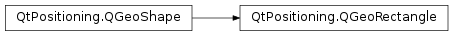

QGeoRectangle¶
Synopsis¶
Functions¶
- def
__eq__(other) - def
__ior__(rectangle) - def
__ne__(other) - def
__or__(rectangle) - def
bottomLeft() - def
bottomRight() - def
contains(rectangle) - def
extendRectangle(coordinate) - def
height() - def
intersects(rectangle) - def
setBottomLeft(bottomLeft) - def
setBottomRight(bottomRight) - def
setCenter(center) - def
setHeight(degreesHeight) - def
setTopLeft(topLeft) - def
setTopRight(topRight) - def
setWidth(degreesWidth) - def
topLeft() - def
topRight() - def
translate(degreesLatitude, degreesLongitude) - def
translated(degreesLatitude, degreesLongitude) - def
united(rectangle) - def
width()
Detailed Description¶
The
PySide2.QtPositioning.QGeoRectangleclass defines a rectangular geographic area.The rectangle is defined in terms of a
PySide2.QtPositioning.QGeoCoordinatewhich specifies the top left coordinate of the rectangle and aPySide2.QtPositioning.QGeoCoordinatewhich specifies the bottom right coordinate of the rectangle.A geo rectangle is considered invalid if the top left or bottom right coordinates are invalid or if the top left coordinate is south of the bottom right coordinate.
Geo rectangles can never cross the poles.
Several methods behave as though the geo rectangle is defined in terms of a center coordinate, the width of the geo rectangle in degrees and the height of the geo rectangle in degrees.
If the height or center of a geo rectangle is adjusted such that it would cross one of the poles the height is modified such that the geo rectangle touches but does not cross the pole and that the center coordinate is still in the center of the geo rectangle.
This class is a
Q_GADGET()since Qt 5.5. It can be directly used from C++ and QML .
-
class
PySide2.QtPositioning.QGeoRectangle¶ -
class
PySide2.QtPositioning.QGeoRectangle(center, degreesWidth, degreesHeight) -
class
PySide2.QtPositioning.QGeoRectangle(topLeft, bottomRight) -
class
PySide2.QtPositioning.QGeoRectangle(other) -
class
PySide2.QtPositioning.QGeoRectangle(other) -
class
PySide2.QtPositioning.QGeoRectangle(coordinates) Parameters: - degreesHeight –
PySide2.QtCore.double - center –
PySide2.QtPositioning.QGeoCoordinate - degreesWidth –
PySide2.QtCore.double - other –
PySide2.QtPositioning.QGeoRectangle - bottomRight –
PySide2.QtPositioning.QGeoCoordinate - topLeft –
PySide2.QtPositioning.QGeoCoordinate - coordinates –
Constructs a new, invalid geo rectangle.
Constructs a new geo rectangle centered at
centerwith a width in degrees ofdegreesWidthand a height in degrees ofdegreesHeight.If
degreesHeightwould take the geo rectangle beyond one of the poles, the height of the geo rectangle will be truncated such that the geo rectangle only extends up to the pole. The center of the geo rectangle will be unchanged, and the height will be adjusted such that the center point is at the center of the truncated geo rectangle.Constructs a new geo rectangle with a top left coordinate
topLeftand a bottom right coordinatebottomRight.Constructs a geo rectangle from the contents of
other.Constructs a geo rectangle from the contents of
other.Constructs a new geo rectangle, of minimum size, containing all of the
coordinates.- degreesHeight –
-
PySide2.QtPositioning.QGeoRectangle.bottomLeft()¶ Return type: PySide2.QtPositioning.QGeoCoordinateReturns the bottom left coordinate of this geo rectangle.
-
PySide2.QtPositioning.QGeoRectangle.bottomRight()¶ Return type: PySide2.QtPositioning.QGeoCoordinateReturns the bottom right coordinate of this geo rectangle.
-
PySide2.QtPositioning.QGeoRectangle.contains(rectangle)¶ Parameters: rectangle – PySide2.QtPositioning.QGeoRectangleReturn type: PySide2.QtCore.boolReturns whether the geo rectangle
rectangleis contained within this geo rectangle.
-
PySide2.QtPositioning.QGeoRectangle.extendRectangle(coordinate)¶ Parameters: coordinate – PySide2.QtPositioning.QGeoCoordinateExtends the geo rectangle to also cover the coordinate
coordinate
-
PySide2.QtPositioning.QGeoRectangle.height()¶ Return type: PySide2.QtCore.doubleReturns the height of this geo rectangle in degrees.
The return value is undefined if this geo rectangle is invalid.
-
PySide2.QtPositioning.QGeoRectangle.intersects(rectangle)¶ Parameters: rectangle – PySide2.QtPositioning.QGeoRectangleReturn type: PySide2.QtCore.boolReturns whether the geo rectangle
rectangleintersects this geo rectangle.If the top or bottom edges of both geo rectangles are at one of the poles the geo rectangles are considered to be intersecting, since the longitude is irrelevant when the edges are at the pole.
-
PySide2.QtPositioning.QGeoRectangle.__ne__(other)¶ Parameters: other – PySide2.QtPositioning.QGeoRectangleReturn type: PySide2.QtCore.boolReturns whether this geo rectangle is not equal to
other.
-
PySide2.QtPositioning.QGeoRectangle.__eq__(other)¶ Parameters: other – PySide2.QtPositioning.QGeoRectangleReturn type: PySide2.QtCore.boolReturns whether this geo rectangle is equal to
other.
-
PySide2.QtPositioning.QGeoRectangle.__or__(rectangle)¶ Parameters: rectangle – PySide2.QtPositioning.QGeoRectangleReturn type: PySide2.QtPositioning.QGeoRectangleReturns the smallest geo rectangle which contains both this geo rectangle and
rectangle.If the centers of the two geo rectangles are separated by exactly 180.0 degrees then the width is set to 360.0 degrees with the leftmost longitude set to -180.0 degrees and the rightmost longitude set to 180.0 degrees. This is done to ensure that the result is independent of the order of the operands.
-
PySide2.QtPositioning.QGeoRectangle.__ior__(rectangle)¶ Parameters: rectangle – PySide2.QtPositioning.QGeoRectangleReturn type: PySide2.QtPositioning.QGeoRectangleReturns the smallest geo rectangle which contains both this geo rectangle and
rectangle.If the centers of the two geo rectangles are separated by exactly 180.0 degrees then the width is set to 360.0 degrees with the leftmost longitude set to -180.0 degrees and the rightmost longitude set to 180.0 degrees. This is done to ensure that the result is independent of the order of the operands.
-
PySide2.QtPositioning.QGeoRectangle.setBottomLeft(bottomLeft)¶ Parameters: bottomLeft – PySide2.QtPositioning.QGeoCoordinateSets the bottom left coordinate of this geo rectangle to
bottomLeft.
-
PySide2.QtPositioning.QGeoRectangle.setBottomRight(bottomRight)¶ Parameters: bottomRight – PySide2.QtPositioning.QGeoCoordinateSets the bottom right coordinate of this geo rectangle to
bottomRight.
-
PySide2.QtPositioning.QGeoRectangle.setCenter(center)¶ Parameters: center – PySide2.QtPositioning.QGeoCoordinateSets the center of this geo rectangle to
center.If this causes the geo rectangle to cross on of the poles the height of the geo rectangle will be truncated such that the geo rectangle only extends up to the pole. The center of the geo rectangle will be unchanged, and the height will be adjusted such that the center point is at the center of the truncated geo rectangle.
See also
PySide2.QtPositioning.QGeoRectangle.center()
-
PySide2.QtPositioning.QGeoRectangle.setHeight(degreesHeight)¶ Parameters: degreesHeight – PySide2.QtCore.doubleSets the height of this geo rectangle in degrees to
degreesHeight.
-
PySide2.QtPositioning.QGeoRectangle.setTopLeft(topLeft)¶ Parameters: topLeft – PySide2.QtPositioning.QGeoCoordinateSets the top left coordinate of this geo rectangle to
topLeft.
-
PySide2.QtPositioning.QGeoRectangle.setTopRight(topRight)¶ Parameters: topRight – PySide2.QtPositioning.QGeoCoordinateSets the top right coordinate of this geo rectangle to
topRight.
-
PySide2.QtPositioning.QGeoRectangle.setWidth(degreesWidth)¶ Parameters: degreesWidth – PySide2.QtCore.doubleSets the width of this geo rectangle in degrees to
degreesWidth.
-
PySide2.QtPositioning.QGeoRectangle.topLeft()¶ Return type: PySide2.QtPositioning.QGeoCoordinateReturns the top left coordinate of this geo rectangle.
-
PySide2.QtPositioning.QGeoRectangle.topRight()¶ Return type: PySide2.QtPositioning.QGeoCoordinateReturns the top right coordinate of this geo rectangle.
-
PySide2.QtPositioning.QGeoRectangle.translate(degreesLatitude, degreesLongitude)¶ Parameters: - degreesLatitude –
PySide2.QtCore.double - degreesLongitude –
PySide2.QtCore.double
Translates this geo rectangle by
degreesLatitudenorthwards anddegreesLongitudeeastwards.Negative values of
degreesLatitudeanddegreesLongitudecorrespond to southward and westward translation respectively.If the translation would have caused the geo rectangle to cross a pole the geo rectangle will be translated until the top or bottom edge of the geo rectangle touches the pole but not further.
- degreesLatitude –
-
PySide2.QtPositioning.QGeoRectangle.translated(degreesLatitude, degreesLongitude)¶ Parameters: - degreesLatitude –
PySide2.QtCore.double - degreesLongitude –
PySide2.QtCore.double
Return type: Returns a copy of this geo rectangle translated by
degreesLatitudenorthwards anddegreesLongitudeeastwards.Negative values of
degreesLatitudeanddegreesLongitudecorrespond to southward and westward translation respectively.- degreesLatitude –
-
PySide2.QtPositioning.QGeoRectangle.united(rectangle)¶ Parameters: rectangle – PySide2.QtPositioning.QGeoRectangleReturn type: PySide2.QtPositioning.QGeoRectangleReturns the smallest geo rectangle which contains both this geo rectangle and
rectangle.If the centers of the two geo rectangles are separated by exactly 180.0 degrees then the width is set to 360.0 degrees with the leftmost longitude set to -180.0 degrees and the rightmost longitude set to 180.0 degrees. This is done to ensure that the result is independent of the order of the operands.
-
PySide2.QtPositioning.QGeoRectangle.width()¶ Return type: PySide2.QtCore.doubleReturns the width of this geo rectangle in degrees.
The return value is undefined if this geo rectangle is invalid.
© 2018 The Qt Company Ltd. Documentation contributions included herein are the copyrights of their respective owners. The documentation provided herein is licensed under the terms of the GNU Free Documentation License version 1.3 as published by the Free Software Foundation. Qt and respective logos are trademarks of The Qt Company Ltd. in Finland and/or other countries worldwide. All other trademarks are property of their respective owners.